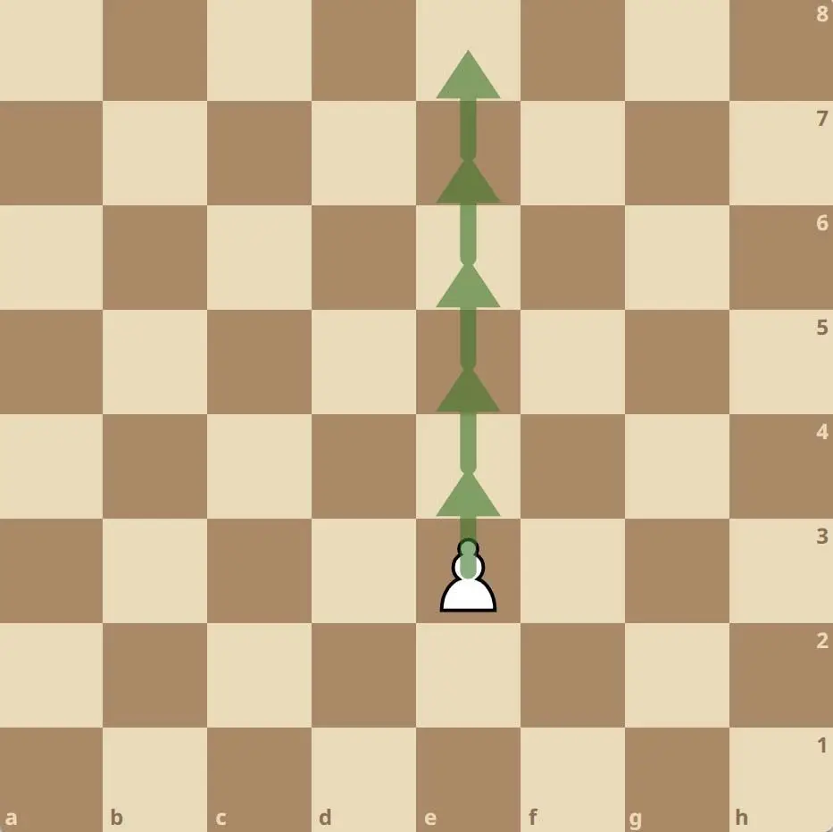
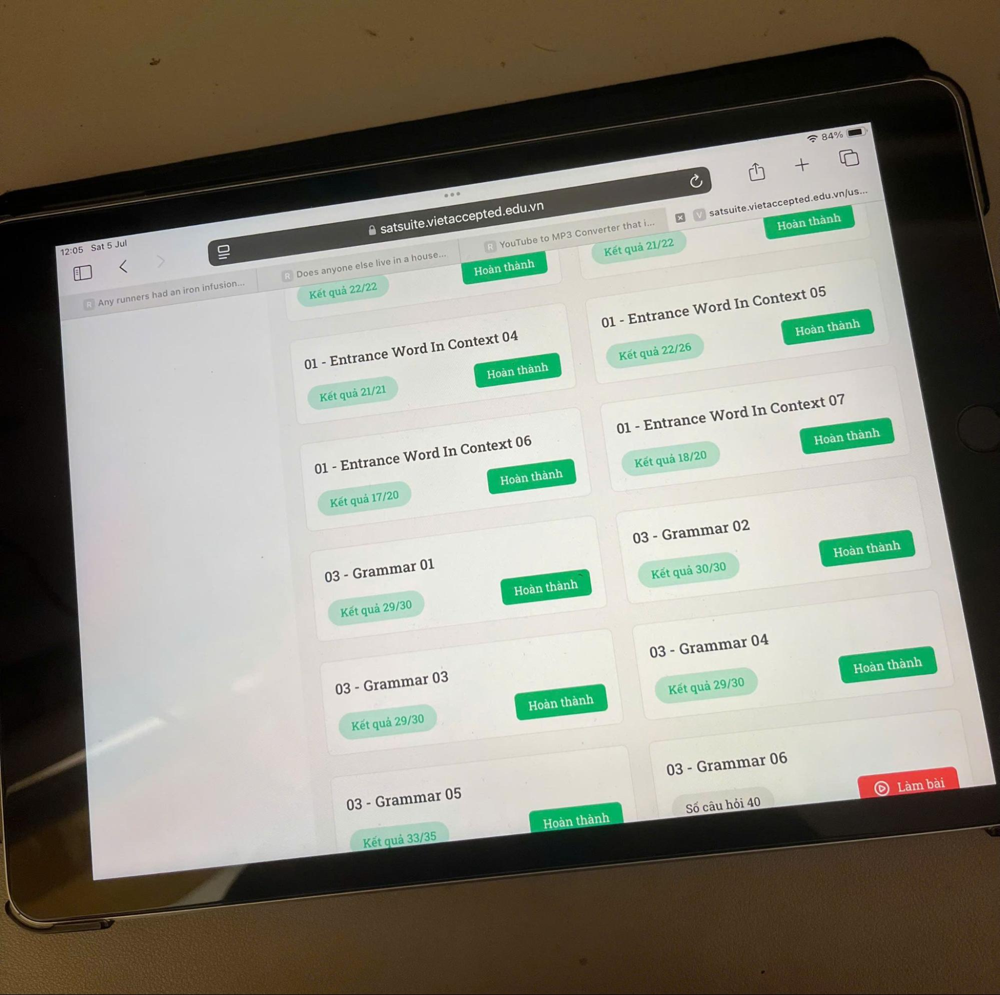
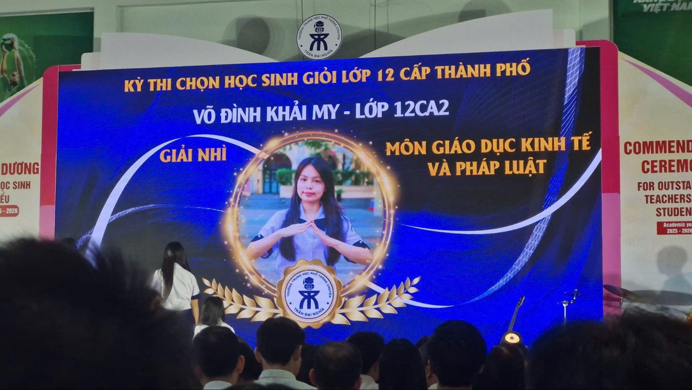

Like a pawn that always moves forward one step at a time, I give my best to every goal I pursue and always strive to move one step further.
GPA
9.9
out of 10
SAT
1580
out of 1600
IELTS
8.5
out of 9.0
Preparing for the SAT was one of the most disciplined chapters of my high school years. Over nearly a year, I devoted an entire summer and countless hours to solving problems, analysing every mistake, and understanding why I made them. My first two attempts resulted in 1450 and 1540, but I knew I had not yet reached my potential. I took the test one final time and achieved a 1580.
More than the score itself, the journey taught me that meaningful growth comes from patience, reflection, and the willingness to learn from every attempt.


While Economics and Legal Education was a subject often overlooked by those around me, I was drawn to it because it connected business, economics, and law in ways that felt practical and relevant to everyday life. Driven by curiosity, I explored the subject far beyond the curriculum throughout Grades 11 and 12, developing a deeper understanding of how markets operate, how businesses create value, and how public policy shapes society.
It was also the first time I began to see business not only as a driver of economic growth, but also as a powerful tool for creating social impact — an idea that would later shape my aspiration to build a sustainable social enterprise.
View my research hereUpon reflection, grades or awards were never the destination of my learning journey. Instead, they became the foundation that inspired me to ask bigger questions, apply knowledge to solve real-world challenges, and eventually take my first step into research.
Click each piece to discover its story.